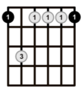
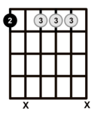
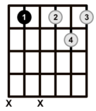
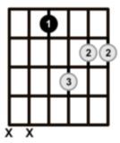
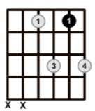
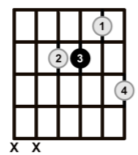
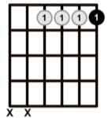

Ingrese su búsqueda


El acorde Em7 en el traste 12 se toca haciendo una cejilla completa con el dedo índice en todas las cuerdas del traste 12, mientras que el dedo anular presiona la cuerda 5 en el traste 14. Esta posición mantiene las notas E - G - B - D, pero en un registro más agudo, lo que le da un sonido más brillante y definido.


httrtthththththtth



